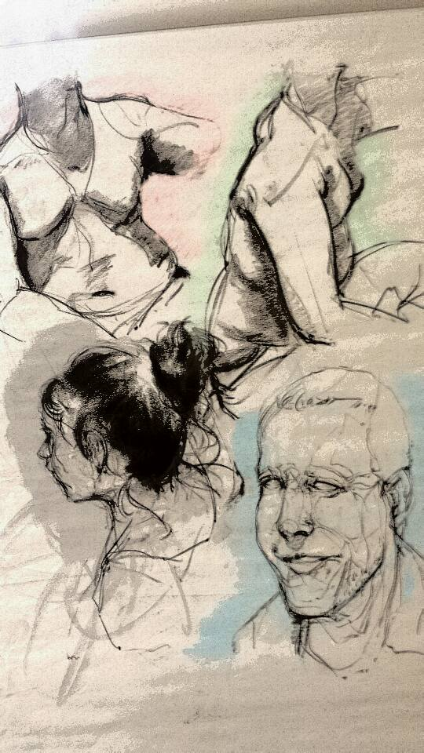
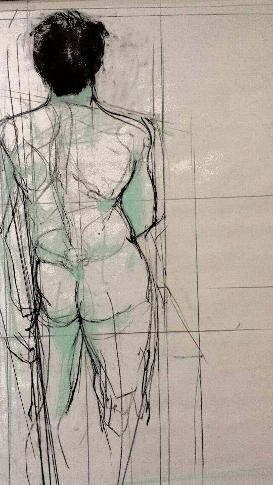
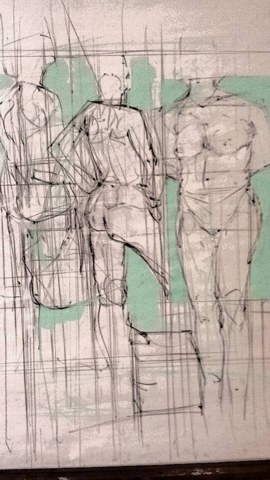

Repetition and Practice
Repetition is key, but it also one of hardest virtues for an artist to keep. I feel nowadays that it is common knowledge that talent can only go so far while practicing can break your art blocks and your imagination’s limit. Keeping a sketchbook and forcing yourself to do a sketch everyday will help you with improving your artwork. What you draw is up to you and up to what you’re struggling with. Here are a few concepts that would be a good place to start:
Practice can only make you better but knowing what needs to be practiced and taking the liberty to practice it is another key in understanding your flaws, but also in improving yourself as well.
  
Music does not belong to me Tycho- Dive Full Album
Alonzo Martinez